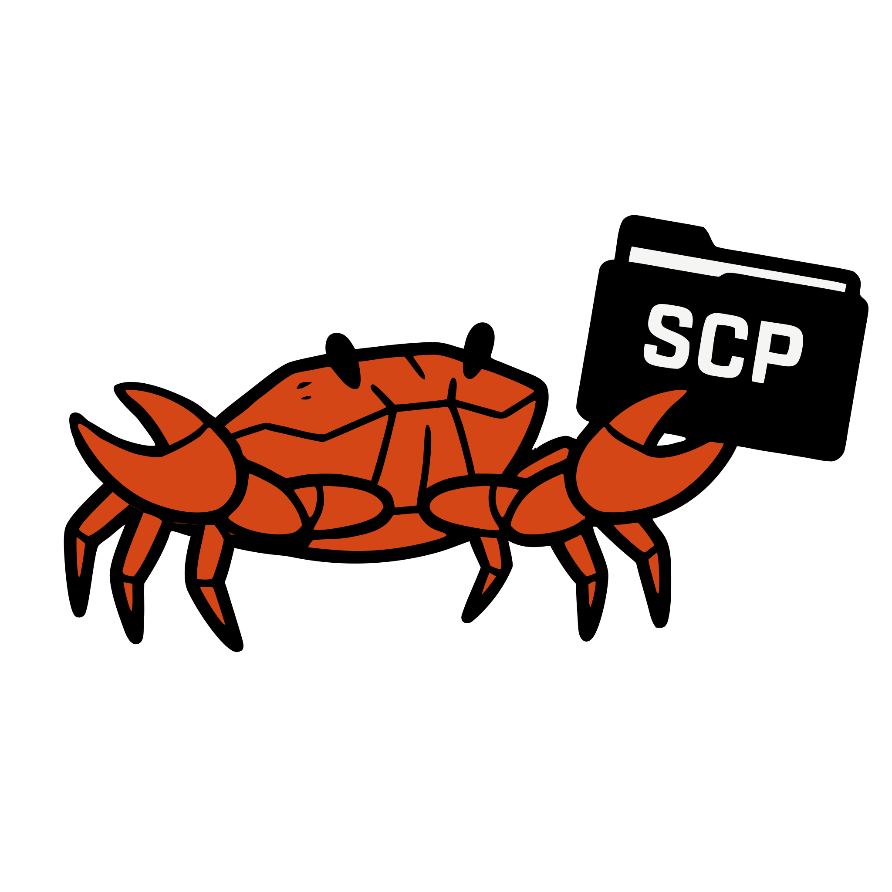

FreeSCP
File-transfer client focused on simplicity and security
About
FreeSCP is a free, open-source, cross-platform SFTP/SCP/FTP/FTPS/WebDAV/SMB client for Windows, macOS and Linux, with a pure-Rust core (russh, russh-sftp, suppaftp, reqwest, smb2) and a Slint-based desktop UI. It also includes an embedded Telnet console (plain TCP and TLS).
Features
- Transfer backends
- SFTP
- SCP, with SSH jump hosts and SOCKS5/HTTP-CONNECT proxies
- FTP and FTPS
- WebDAV
- SMB/CIFS (SMB2/SMB3; no SMB1, proxy, or jump-host support)
- Telnet console
- Plain TCP and TLS
- VT100/VT220 terminal with scrollback and copy/paste
- NAWS window resizing and optional auto-login
- SSH connectivity
- SSH jump hosts
- Cloudflare Tunnel hosts via standard
~/.ssh/configProxyCommandentries, e.g.cloudflared access ssh - SOCKS5 and HTTP-CONNECT proxies
- File manager
- Transfer queue
- Integrity verification
- Drag & drop
- Permissions editor
- Remote search
- Site manager
- SSH config import
- Connection history
- Keychain-backed secret storage
- Localizations: English, Spanish, French, Portuguese
Cloudflare Tunnel (cloudflared) support
Servers published through a Cloudflare Tunnel are reached with the standard
OpenSSH ProxyCommand mechanism. Add a line such as
ProxyCommand cloudflared access ssh --hostname ssh.example.com to
the host's entry in ~/.ssh/config and import it from the site
manager: FreeSCP honors the proxy command when opening SFTP/SCP connections
and terminal sessions, with no extra setup inside the app.
Download
Prebuilt binaries are available from the GitHub Releases page.
...or build from source:
git clone https://github.com/NOXCIS/FreeSCP.git cd FreeSCP cargo build --workspace cargo run -p freescp-app
Supported protocols
| Protocol | Status |
|---|---|
| SFTP | Supported (SSH jump hosts, cloudflared tunnels) |
| SCP | Supported (SSH jump hosts, cloudflared tunnels, SOCKS5/HTTP-CONNECT proxies) |
| FTP | Supported |
| FTPS | Supported |
| WebDAV | Supported |
| SMB/CIFS | Supported (SMB2/SMB3; no SMB1, proxy, or jump host) |
| Telnet | Supported (plain TCP and TLS console) |
Source Code
FreeSCP is developed in the open. Clone, read, and contribute:
- GitHub: github.com/NOXCIS/FreeSCP
- GitLab: gitlab.com/Noxcis/FreeSCP
License
FreeSCP is Free Software released under the
MIT License.
Third-party credits are listed in the repository's docs/credits/ directory.
Report an Issue
Found a bug or have a feature request? Please open an issue on GitHub Issues.